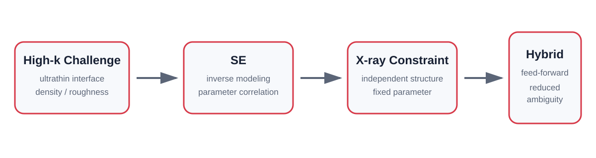
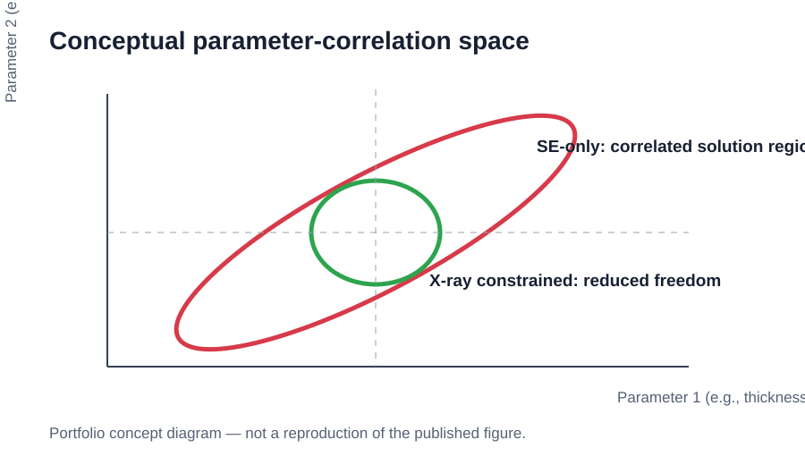
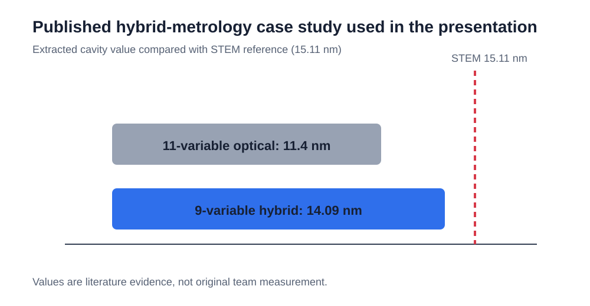

Project summary
Problem: ultrathin-film parameter correlation
SE: optical inverse modeling
X-ray: independent structural information
Strategy: fixed-constraint feed-forward
초박막에서는 계면과 모델의 모호성이 함께 커진다
프로젝트는 advanced-node High-k dielectric에서 film thickness뿐 아니라 interfacial layer, density non-uniformity, and roughness가 중요한 공정 변수가 된다는 문제에서 출발했습니다. ALD 초기 성장의 비균일성과 SiOx interfacial layer 형성까지 고려하면, 단일 평균값만으로 film quality를 설명하기 어렵습니다.
Low MSE가 반드시 physically correct solution은 아니다
SE는 Ψ와 Δ를 측정한 뒤 virtual optical model을 fitting합니다. 초박막에서는 thickness, refractive index, roughness가 유사한 optical response를 만들 수 있어 parameter correlation이 발생할 수 있습니다.
핵심은 fitting error 자체보다, 외부 physical constraint가 없는 inverse solution의 uniqueness 문제입니다.

X-ray 구조 정보를 SE inverse model의 fixed constraint로 사용
프로젝트에서의 hybrid는 단순한 장비 결합이 아니라, 서로 다른 physics에서 얻은 정보를 모델 내부에서 연결하는 sensor-fusion / feed-forward 개념으로 정리했습니다.
Hybrid modeling logic와 literature case-study interpretation 담당
내가 맡은 파트는 SE 단독 분석의 parameter correlation 문제에서 시작해, X-ray-derived structure를 fixed constraint로 넣는 원리, floating-variable 감소, published STEM comparison의 의미, 그리고 이 개념을 High-k density / roughness 분석으로 연결하는 후반부였습니다.
Detailed contributionLower fitting error did not mean better physical agreement

| Model | Floating parameters | MSE | Extracted value | STEM reference |
|---|---|---|---|---|
| Unconstrained optical | 11 | 0.163084 | 11.4 nm | 15.11 nm |
| X-ray constrained hybrid | 9 | 0.428461 | 14.09 nm | 15.11 nm |
Expected use: density profile and interface-roughness interpretation
프로젝트는 XRR/X-ray 계측이 제공하는 structural information을 SE 모델의 prior 또는 fixed parameter로 사용해, thickness–n correlation과 roughness ambiguity를 줄이는 방향을 제안했습니다.
이 프로젝트에서는 실제 High-k wafer를 SE/XRR로 직접 측정하지 않았기 때문에, 자체 정확도 향상률이나 original metrology result를 주장하지 않습니다.